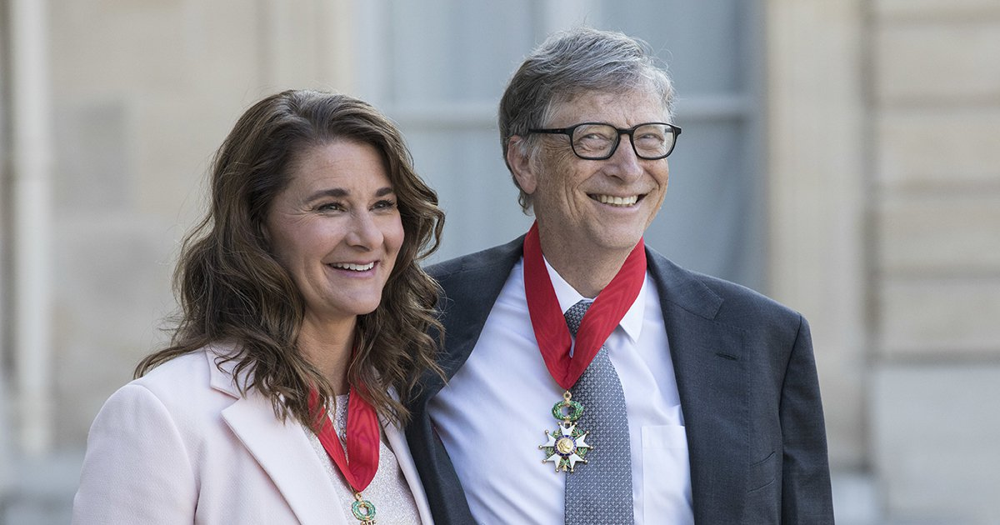

Premios
| Año\Tipo | Tecnologicos/Informaticos | Filantropicos |
|---|---|---|
| 1994 | CEO del año | X |
| 1996 | Miembro Academia Nacional de Ingeniería | X |
| 1999 | Medalla del Instituto Tecnologico NY | X |
| 2002 | Doctorado KTH Royal Institute | Premio Jefferson |
| 2006 | Personas mas influyentes del siglo XX | Príncipe de Asturias |
| 2010 | Doctorado Universidad de Cambridge | Silver Buffalo Award |
| 2015 | Miembro Academia China de Ingenieria | Padma Bhushan |
Fundacion Bill y Melinda Gates
La Fundación Bill y Melinda Gates (B&MGF o Fundación Gates) es la fundación privada más grande del mundo, fundada por Bill Gates y Melinda Gates. Su sede está en la ciudad de Seattle, Washington. En 1994, fue creada como la Fundación William H. Gates y fue renombrada en 1999 como la Fundación Bill y Melinda Gates. En enero de 2000 se unen la fundación Gates para el aprendizaje y la fundación William H. Gates.
En 2004, la fundación desarrolla una campaña de 200 millones de dólares para promover la prevención del sida en India; su mayor programa de subvenciones en un solo país. El esfuerzo cuenta con ayuda promocional de estrellas de Hollywood. Microsoft, empresa anteriormente liderada por Bill Gates, emplea a muchos ingenieros indios en Estados Unidos y tiene 10.000 empleados en India.
En 2006, dona 500 millones de dólares para la lucha contra el sida. El fondo será pagado en cinco años al Fondo Global contra el sida, la tuberculosis y la malaria. 132 países serán beneficiados.
